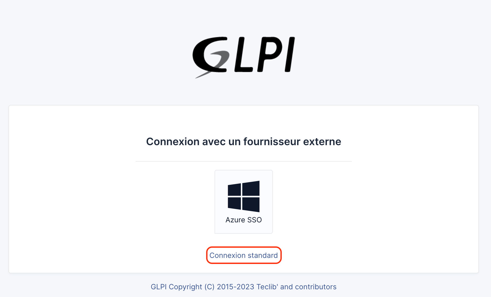

Glpi#
Glpi est une application WEB qui aide les entreprises à gérer leur système d’information. Cette solution est capable de construire un inventaire de toutes les ressources de la société et de réaliser la gestion des tâches administratives et financières.
(source: Wikipedia)
Ici à Gycha, nous utilisons ce service pour la gestion des tickets et des demandes qu’on recevoi par mail.
Authentification#
Le lien pour accèder à l’interface de Glpi est:
http://glpi.edu-vaud.ch/
Ce lien vous dirige vers la page login du Glpi. Vous pouvez vous logger avec votre identifiant et mot de passe eduvaud.
{kind=link}
Gestion des tickets#
Si vous vous authentifiez correctement, vous entrez à la page d’accueil du Glpi. Depuis ici, vous pouvez allez vers la section des Tickets pour les gérer.

Pour bien pouvoir voir tous les tickets, controllez bien que vous êtes en mode supervisor.

Liste des tickets#
Liste des cas créés par Glpi (soit depuis un email envoyé à la boîte mail de Glpi soit le ticket est créé depuis interface de Glpi) sont afficher depuis un filtrage par defaut qui affiche tout les tickets “non-résolus”

Avec cet outils vous pouvez facilement ranger les tickets ou trouver les tickets que vous souhaitez.

Tips!
Vous pouvez aussi savegarder, réinitialiser ou masquer votre filtre avec les options qui sont situés à côté du boutons de la recherche. 
Attribution des tickets#
Note!
Routage des ticket informatique, ou bien l’attribution des ticket permet de circuler les tickets entre l’équipe du support et facilite le traîtement des tickets.
Pour attribuer un ticket à sois même ou a un collègue par exemple, vous allez cliquer sur le ticket, ensuite dans la page du ticket cliquer sur le menu déroulant “Action”. Depuis la vous verrez l’option “Ajouter un acteur”.

Après avoir cliqué sur la page sur “Ajouter un acteur”, ça vous ouvre une fenêtre en vous demandant de choisir le type d’action (Demandeur, observateur, attribuer à).

Puis validez votre choix est l’attribution du ticket est faite!